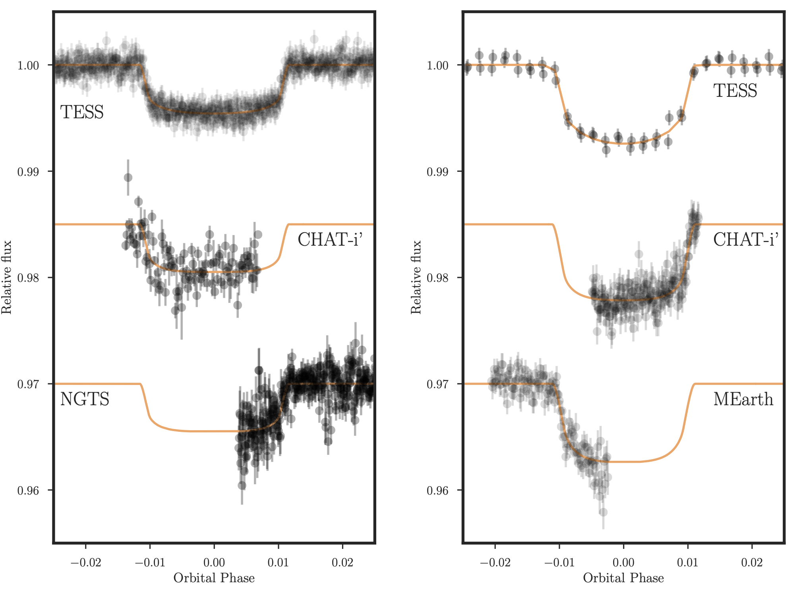
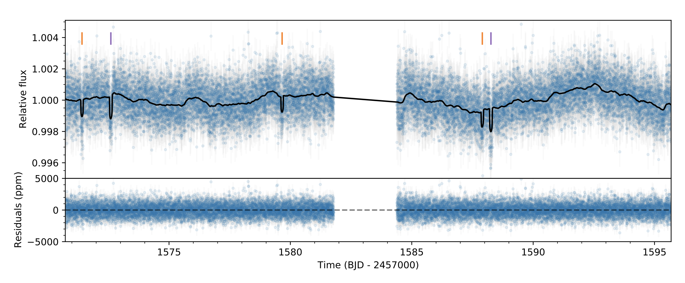

STATUS UPDATE: Sector 27 light curves are now on MAST!
Welcome TESS followers to our weekly news bulletin! It has been another busy one for TESS on the archive this week, well done authors! This week we present three of these papers, enjoy.
TOI-481 b & TOI-892 b: Two long period hot Jupiters from the Transiting Exoplanet Survey Satellite (Brahm et. al., 2020) :
Two new giant planets with periods of 10 days have been discovered by TESS, TOI-481 b and TOI-892 b. TESS data in combination with that from ground-based facilities have been used to determine the masses 1.53 MJ and 0.95 MJ, radii 0.99 RJ and 1.07 RJ, and orbital periods 10.3311 and 10.6266 days, of the two planets respectively.
Both planets are seen to orbit metal rich stars, but at different evolutionary stages. TOI-481 is a G-type star at 6.7 Gyrs old, whereas TOI-892 is a F-type dwarf star. Both these systems are important in understanding the formation and structure of hot Jupiters.
A planetary system with two transiting mini-Neptunes near the radius valley transition around the bright M dwarf TOI-776 (Luque et. al., 2020) :
In this paper the authors report on the discovery of two transiting planets around LP 961-53 (TOI-776). This is a bright M1 V star, with transits detected in Sector 10 of the TESS data. Combining TESS data with HARPS radial velocity measurements, as well with data from other ground-based facilities (MEarth and LCOGT), the authors were able to measure periods, radii, and masses of the two planets.
The inner planet TOI-776b has a period of 8.25 d, a radius of 1.83 Re, and a mass of 4.66 Me. The outer planet, TOI-776c, has a period of 15.66 d, a radius of 2.06 Re, and a mass of 6.1 Me.
The data also indicates a 35 day rotational period for the star, this is supported by the analysis of 15 years worth of ground-based photometric monitoring data and the inspection of different spectral line indicators. Both detected planets have a significant atmospheres, with slightly different envelope mass fractions.
TESS Observations of the Hot Jupiter Exoplanet XO-6b: No Evidence of Transit Timing Variations (Ridden-Harper et. al., 2020) :
Using ground-based observations a hot Jupiter exoplanet, XO-6b, was reported to have apparently periodic transit timing variations (TTVs), with a semi-amplitude of 14 min and period of 450 days. It was thought that these variations were cased by an unknown low-mass planet orbiting the host star.
In this paper the authors have used three sectors of TESS data spanning over seven months, to better understand the system. From the TESS data the authors were able to update the orbital period to 3.76 days, with a transit epoch of 2456652.7157 BJDTDB. No evidence of TTVs were discovered in this new analysis, confirming that TTVs are rarely seen in hot Jupiters.

Fig 1: Taken from Brahm et. al., (2020). Left: The phase folded 2 min cadence TESS data for TOI-481 in addition to ground-based observations with CHAT and NGTS.The solid orange line is the transit model in each case. Right: Same as left (longer cadenced TESS data) but for TOI-892, and MEarth data instead of NGTS

Fig 2: Taken from Luque et. al., (2020). The TESS PDC-corrected SAP transit photometry from the SPOC pipeline with the best-fit juliet model. Purple and orange ticks represent the transits of the candidates TOI–776.01 (purple) and TOI–732.02 (orange).